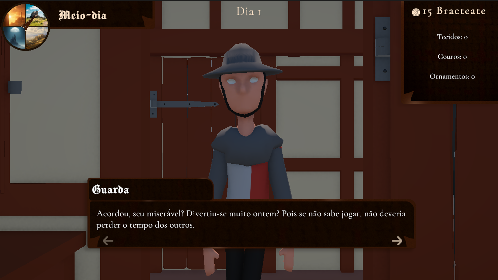
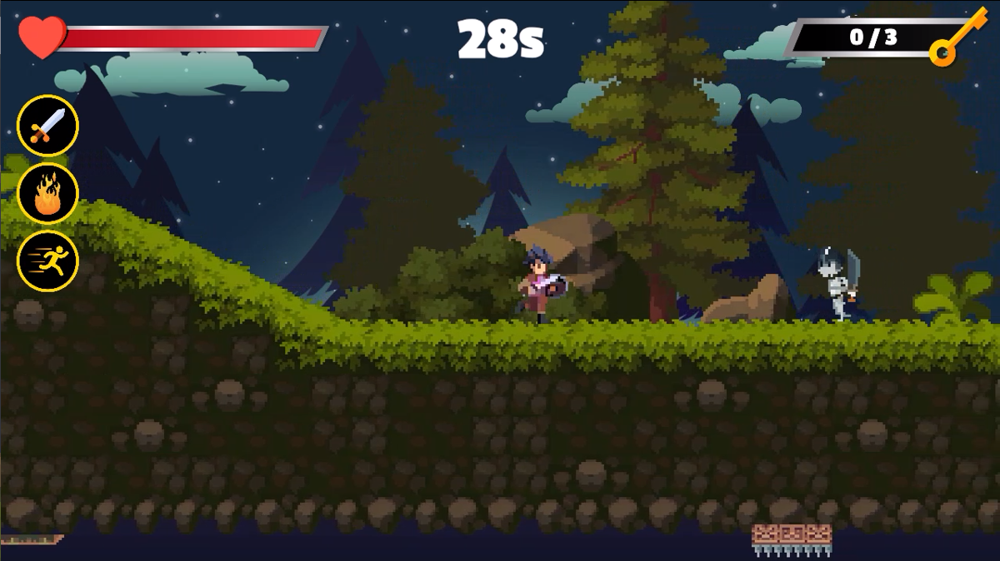
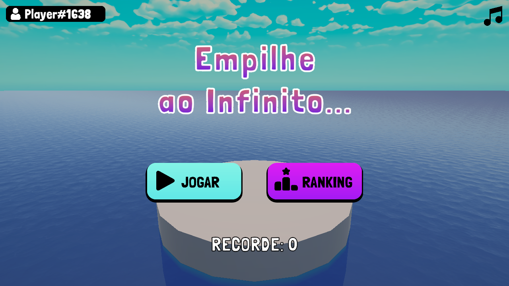
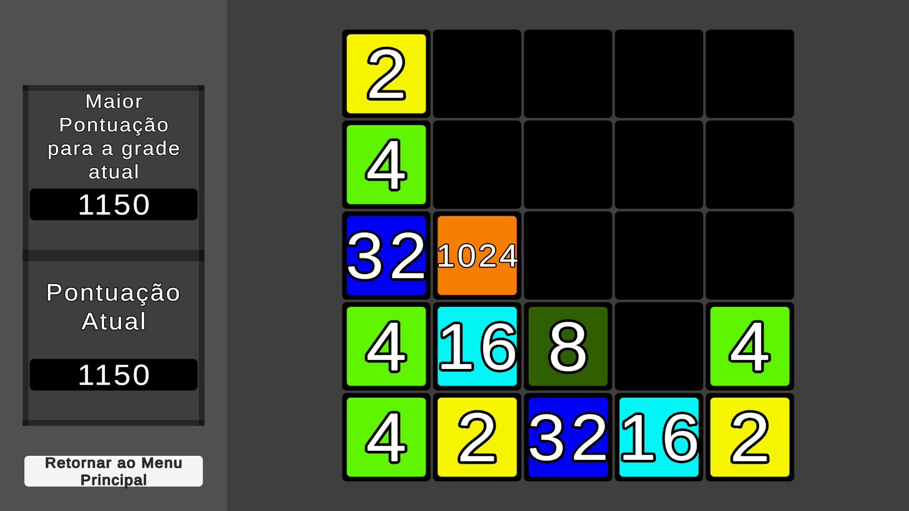
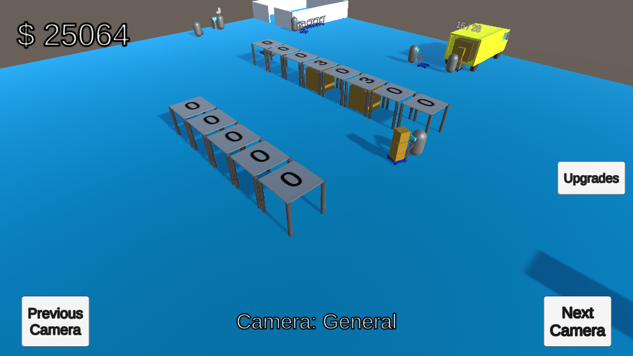

Massa Suspeita

Lançado em 18 de Outubro de 2026

Massa suspeita é um jogo de culinária e gerenciamento de tempo inspirado por Papa's Pizzeria, baseado na criação de receitas de macarrão com diversos ingredientes incomuns e suspeitos.
Feito durante a GameJamPlus 26/27.
Por Um Fio
Lançado em 23 de Fevereiro de 2026

Por Um Fio é um jogo point-and-click 3d onde um alfataite está totalmente endividado, e terá de fazer pequenos trabalhos para pagar suas dívidas que não parecem ter fim.
Este é o meu primeiro jogo feito em grupo, e também durante minha primeira GameJam, a CtrlAltJam Carnaval 2026.
Dead Attack
Lançado em Setembro de 2025

Dead Attack é um jogo de tiro em primeira pessoa, onde o jogador tem de derrotar zumbis e sobreviver o máximo possível.
Time Hunt
Lançado em Junho de 2025

Time Hunt é um jogo de ação e plataforma, o objetivo do jogador é coletar todas as chaves no mapa antes que o tempo acabe.
Empilhe Ao Infinito
Lançado em 27 de Fevereiro de 2026

Empilhe Ao Infinito é um jogo de puzzle em que o jogador deve empilhar blocos de diferentes tamanhos numa pequena plataforma no meio do mar.
Apesar da data de lançamento, este jogo já estava pronto a alguns meses, fazendo parte dos projetos realizados no curso Desenvolvedor Unity do Lucas Busato.
2048
Relançado em Janeiro de 2026
(Original de Agosto de 2023)

A minha versão do clássico 2048, um jogo em que o jogador precisa somar os quadrados ao jogá-los para os lados, cima e para baixo até alcançar 2048.
Projeto Reciclagem
Sem data de lançamento

Um projeto que criei para aplicar o aprendizado do pacote NavMesh da Unity.
É um jogo estilo Idle, onde o jogador comprou recentemente um galpão de reciclagem e terá de consertá-lo, contratar mais funcionários, e melhorar o local para obter mais pacotes e continuar o ciclo de jogo.